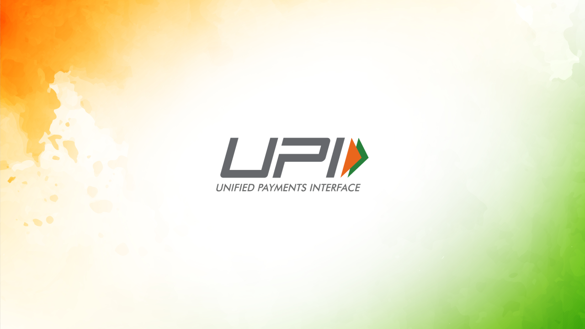

About Me
I am working as a Technical Executive (MIS) at IndiGo through Colliers International, where I work on reporting, data tracking, documentation, and ESG-related information management to support operational monitoring and compliance.
I am a Computer Science graduate from Keshav Mahavidyalaya, University of Delhi, with a strong interest in transforming raw data into meaningful insights that support business decisions. My interests span business intelligence, data analytics, predictive modelling and AI-driven analytical solutions.
Through academic and personal projects, I have worked with real-world datasets, developed interactive Power BI dashboards, explored forecasting techniques and built a machine learning-based fraud detection solution integrated with workflow automation.
I am passionate about continuously strengthening my technical skills and applying analytical thinking to solve practical business problems.
Experience
Technical Executive (MIS)
IndiGo via Colliers International
Supporting operational reporting, data management, and ESG/EHS documentation to facilitate monitoring and compliance.
Key Responsibilities
- Prepare accurate weekly and monthly MIS reports by analyzing and consolidating operational data on schedule.
- Maintain structured datasets and Excel-based trackers to streamline operational reporting.
- Validate, analyze, and document 750+ ESG and EHS data records to support ISO audits and compliance.
Featured Projects
Automated Credit Card Fraud Risk Assessment
Developed a credit card fraud detection pipeline using Python and XGBoost to distinguish fraudulent from legitimate transactions through risk scoring and thresholding.

TransactIQ - Forecasting India's Journey Beyond Cash with UPI
TransactIQ focuses on modeling and forecasting the growth of UPI transactions in India using historical transaction data. The project examines long-term adoption trends.
Skills & Tools
Data Analysis & Querying
SQL · Python · Pandas · NumPy · Excel · Data Cleaning · Exploratory Data Analysis
Business Intelligence
Power BI · DAX · Power Query · Data Visualization · Dashboard Development · KPI Reporting
Machine Learning
XGBoost · Classification · Forecasting · Model Evaluation · Statistical Analysis
Automation & Engineering
FastAPI · n8n · Generative AI Integration · ETL with Python · Data Processing
Business & Professional Skills
MIS Reporting · Business Analysis · ESG Data Tracking · Documentation · Problem-Solving · Stakeholder Communication
Education
Bachelor of Science (Honours) in Computer Science
Keshav Mahavidyalaya, University of Delhi
Pitampura, Delhi
Relevant areas: Programming, Database Management, Statistics, Data Analysis, and Social Network Analytics.
Let's Connect
I'm always open to connecting with professionals, exploring opportunities in data analytics and business intelligence, and discussing ideas around data-driven problem-solving.